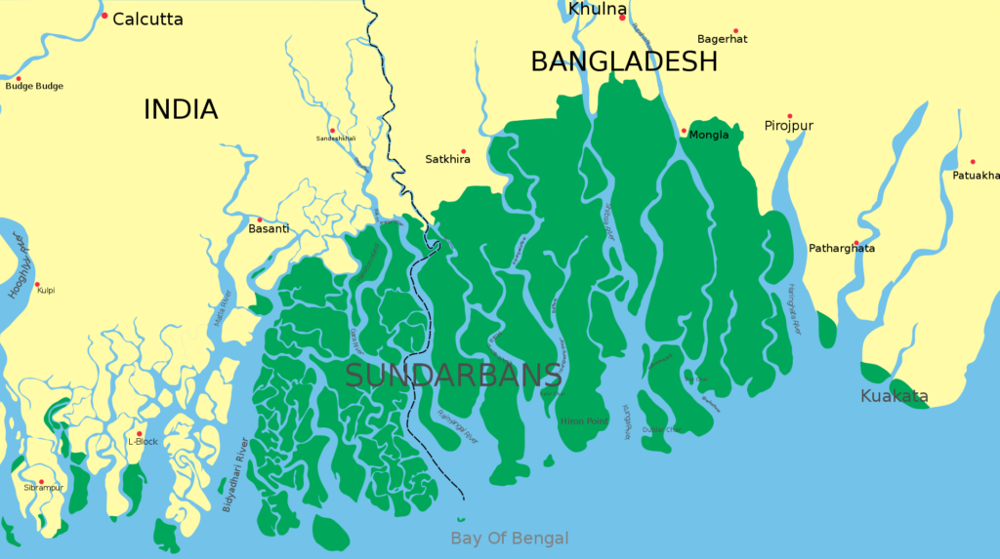
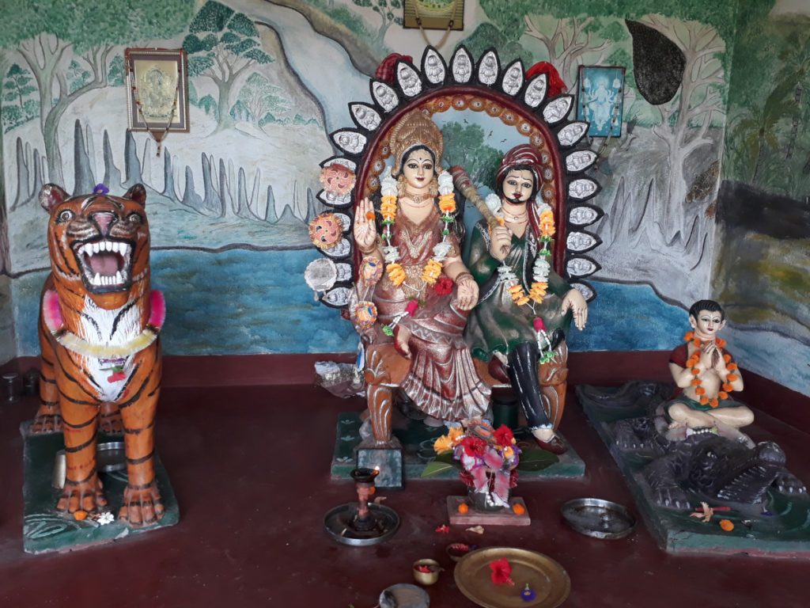
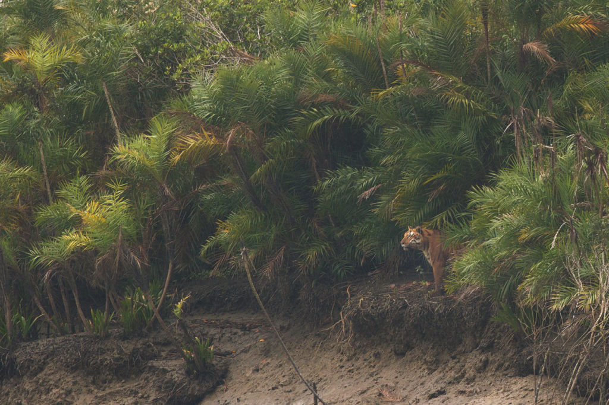
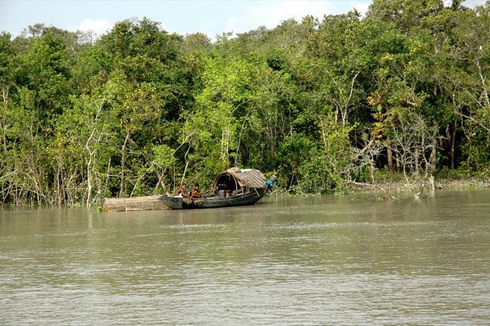
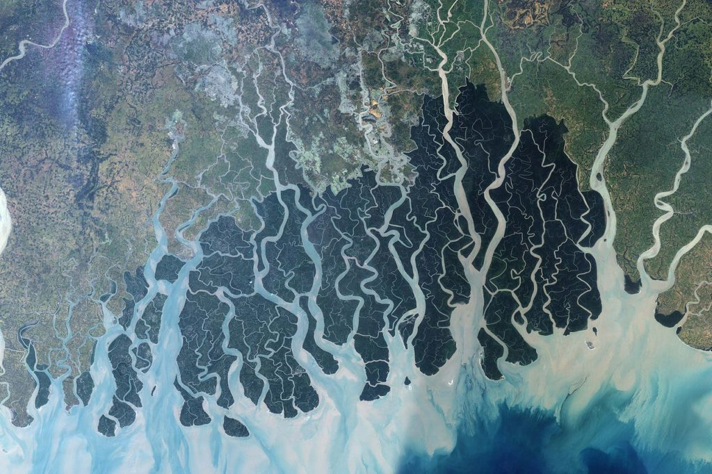

Il paese delle maree: viaggio nel regno di Bon Bibi
Così venne instaurato l’ordine nella terra delle diciotto maree, con le sue due metà, quella selvaggia e quella coltivata, in perfetto equilibrio. Le cose andarono bene finché quell’ordine non venne sconvolto dall’avidità umana.
Amitav Ghosh, Il paese delle maree
La seconda tappa del nostro percorso di Libere Letture ci porta in India, nella foresta dei Sundarbans nel delta del Gange. La nostra guida sarà il bellissimo romanzo di Amitav Ghosh, Il paese delle maree [The Hungry Tide, 2004], che racconta e percorre con maestria questo delicato ecosistema. Oltre a Ghosh, nel corso della nostra esplorazione, leggeremo e ascolteremo altre voci che ci aiutino a capire e comprendere questo luogo molto particolare. Alcune di queste voci le trovate su questo gruppo Telegram.

I Sundarbans sono una foresta di mangrovie nell’area del delta del Gange, affacciata sulla baia del Bengala. Il nome “Sundarbans” significa letteralmente “la bella foresta” ed è quello comunemente usato nell’India contemporanea. Gli imperatori Mughal, invece, chiamavano questa zona bhatir desh, “il paese delle maree”, perché molte delle isole che la compongono emergono solamente con la bassa marea.
Il paese delle maree è il territorio di Bon Bibi, divinità protettrice della foresta. La dea combatte contro il demone Dokkhin Rai, che appare con le sembianze di una tigre. Dopo averlo sconfitto, Bon Bibi riserva una parte della foresta agli uomini e una parte al demone, perché possa vivere indisturbato. Secondo la leggenda, l’equilibrio viene rotto dall’avidità degli uomini, che si addentrano nella parte proibita della foresta e vengono attaccati dal demone.

La foresta copre un’area di circa 10.000 kmq a cavallo tra l’India e il Bangladesh, di questi circa 1.000 kmq rientrano nel Sundarbans National Park del West Bengal, India. Parte di questo parco nazionale è una riserva dedicata alla protezione della tigre del Bengala, una delle sei sottospecie di tigri esistenti. L’India ospita circa il 70% di tutte le tigri rimaste al mondo (attorno ai 4000 esemplari), di cui un centinaio vivono nell’area del delta del Gange.

Il paese delle maree è una terra di confine, non solo tra India e Bangladesh, ma anche, e soprattutto, tra fiume e oceano, tra terra e acqua, tra uomo e animale. Per questa ragione, la sua esistenza, e quella delle specie che vi abitano, si regge su delicato equilibrio. Da sempre, gli abitanti di questa zona devono vivere a contatto con la tigre e bilanciare la propria presenza con quella di questo felino. In aggiunta, la loro sussistenza dipende dal livello delle acque e da quanta terra coltivabile riescono a strappare alla marea. Più in generale, l’ecosistema terrestre e acquatico di questa zona si regge su un rapporto tra acqua dolce e acqua salata che è vitale per alcune specie, come l’orcella asiatica, un delfino che vive negli estuari dei fiumi.

I crescenti cambiamenti antropogenici stanno mettendo a dura prova l’equilibrio del paese delle maree. I problemi sono di diverso ordine. Innanzitutto, l’inquinamento progressivo delle acque del fiume, mette a rischio l’esistenza di alcune specie, come l’orcella asiatica. A questo si accompagna la continua erosione della foresta per fare posto ad attività umane. Infine, a livello macroscopico, i Sundarbans sono una delle zone al mondo maggiormente colpite dalla crisi climatica. L’innalzamento del livello delle acque anche di qualche centrimetro potrebbe compromettere la sopravvivenza umana e animale in queste zone. Inoltre, l’area è spesso colpita da eventi climatici straordinari per forza e frequenza, come il recente ciclone Amphan.

Il libro e l’autore
Il Paese delle maree è un romanzo dello scrittore indiano Amitav Ghosh, uscito nel 2004. In Italia è stato pubblicato nel 2005 per Neri Pozza Editore, con la traduzione di Anna Nadotti.
Il romanzo segue le vicende di Piya, una biologa, e Kanai, un traduttore, che, per motivi diversi, si trovano nei Sundarbans. Venuti dal mondo esterno, dalla città, si trovano a contatto con un ambiente e un universo sconosciuti. Il loro viaggio non sarà solamente un’esplorazione dell’ecosistema della foresta, ma anche della cultura, delle leggende e della storia delle popolazioni locali, per scoprire un modo diverso di vivere la relazione umanità-natura.
Di cosa parliamo?
- Amitav Ghosh e la letteratura indiana contemporanea
- Letteratura, ecologia e crisi climatica
- I Sundarbans e le conseguenze della crisi climatica
- Rapporto tra umanità ed ecosistema
- Linguaggio scientifico e linguaggio artistico-letterario nel descrivere la crisi climatica
- Postcoloniale, decoloniale ed ecologia
- Ruolo dell’immaginario e della spiritualità nel ri-descrivere il rapporto tra umanità e natura
- Territori di confine: i delta dei fiumi come luoghi da cui osservare la crisi climatica
Materiali
Amitav Ghosh e la riflessione sulla crisi climatica
- La grande cecità [The Great Derangement, 2016] è una raccolta di saggi in cui lo scrittore indiano riflette sulla crisi climatica e sul suo rapporto con l’immaginario
- L’isola dei fucili [Gun Island, 2019] è l’ultimo romanzo dello scrittore indiano, in cui riprende alcuni temi de Il paese delle maree, tra cui il ruolo di miti e leggende nel plasmare la nostra relazione con la natura
- Qui una recente intervista (in italiano)
I Sundarbans e la crisi climatica
- Qui un articolo del National Geographic Magazine sui Sundarbans e l’impatto della crisi climatica
- Qui un articolo del New York Times sulle tigri del Bengala e la loro sopravvivenza
- Qui un articolo di Down to Earth sulle conseguenze del ciclone Amphan
- The Vanishing: India’s Wildlife Crisis (2017) è un saggio di Prerna Singh Bindra sulla conservazione delle specie animali in India
Miti, leggende, immaginario
- Il culto di Bon Bibi, divinità protettrice della foresta, è molto diffuso tra gli abitanti dei Sunderbans. Bon Bibi è una figura sincretica, adorata da hindu e musulmani. Qui un articolo che ne racconta la leggenda e qui un documentario sulla sua figura
- Qui una preghiera rivolta a Bon Bibi a seguito del ciclone Amphan
- Forest of Tigers (2010) è un saggio dell’antropologa Annu Jalais sui Sundarbans. Jalais ha anche accompagnato Ghosh nel suo lavoro di ricerca per la scrittura del romanzo
- Il pensiero dell’antropologo italiano Ernesto De Martino (di cui ricordiamo in particolare l’opera _Sud e Magia_ [1982]) ha profondamente influenzato la riflessione di Ghosh sul ruolo del pensiero magico e delle leggende nel pensare la crisi climatica
- Il sussurro del mondo [The Overstory, 2018] di Richard Powers è un romanzo che intreccia il potere delle piante e la forza delle storie. Un coro di voci, umane e non, racconta l’interconnessione tra donne, uomini e natura, superando la separazione tra noi e il resto dell’esistente.
Decoloniale, postcoloniale, ecologia
- Consigliamo due scritti dello storico Dipesh Chakrabarty: Provincializzare l’Europa [Provincializing Europe, 2000] su centralità e decentralità del pensiero europeo, in particolare quello di derivazione illuminista; le due lezioni tenute alla Yale University nel 2015 sulla crisi climatica e le sue implicazioni per lo studio della storia
- Abbiamo già parlato del lavoro di Malcom Ferdinand nella precedente Libera Lettura, ma vale la pena di ripeterci: qui la sua conferenza sull’ecologia decoloniale
- Un articolo dello Smithsonian Magazine riflette sui legami tra colonialismo e scienza
- Il saggio The Conservation Revolution (2020), parla della necessità di cambiamenti radicali per superare la crisi climatica, tra cui un’operazione di decolonizzazione e la costruzione di un sistema sociale più equo. Qui un’intervista con uno dei due autori, Bram Büscher
Delta, estuari e storie di fiumi
- Blues per le terre nuove è un progetto letterario di Wu Ming 1 che racconta il delta del Po e l’impatto della crisi climatica
- Nelle terre del delta: uomini e Po è un film documentario del 1975 sul delta, in cui si affrontano le particolari condizioni economiche, sociali e ambientali dell’area
- Via Fluminis è il nostro laboratorio sul fiume Mincio
- A River Called Titas è un film del 1973 di Ritwik Ghatak, pietra miliare del cinema bengalese. Il film è tratto da un romanzo di Advaita Barman e racconta la storia di un fiume e delle popolazioni di pescatori che lo abitano. Si può vedere su Rai Play
- In una serie di articoli, il giornalista Cameron Conaway esplora il fiume sacro Gange o la Ganga, come viene chiamato in India, tra conservazione, crisi climatica e sacralità.
- Qui e qui due articoli di Paul Salopek sulla Ganga, le orcelle e i fiumi e la crisi idrica in India, nell’ambito del progetto Out of Eden Walk.
- Walking Upstream è il progetto del conservazionista Siddharth Agarwal, un cammino lungo due fiumi indiani, la Ganga e il Ken. Qui il suo Tedx Talk in cui descrive il progetto